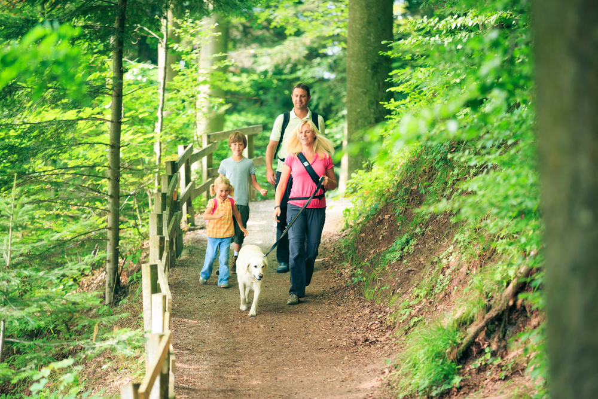

Bildbeschreibung auf Deutsch (Niveau B1)

Beschreibung:
Eine Familie mit zwei Kindern und einem Hund wandert gemeinsam durch einen bewaldeten Weg.
A family with two children and a dog is hiking together through a forest path.
Die Eltern tragen Rucksäcke, die Kinder feste Schuhe.
The parents are carrying backpacks, the children are wearing sturdy shoes.
Der Hund läuft vorneweg – es scheint ein mittlerer bis großer Vierbeiner zu sein.
The dog is walking ahead – it appears to be a medium to large-sized dog.
Die Stimmung ist fröhlich und entspannt.
The mood is cheerful and relaxed.
Im Hintergrund sieht man hohe Bäume und ein leicht hügeliges Gelände.
In the background, you can see tall trees and slightly hilly terrain.
Das Wetter ist mild, vermutlich Frühling oder Herbst, denn die Kleidung ist weder sehr warm noch sehr luftig.
The weather is mild, probably spring or autumn, since the clothing is neither very warm nor very light.
Weitere Details:
Die Kinder lachen und schauen sich gegenseitig an.
The children are laughing and looking at each other.
Die Eltern beobachten aufmerksam die Umgebung, vielleicht entdecken sie etwas Interessantes.
The parents are attentively observing the surroundings, maybe they are discovering something interesting.
Der Hund ist ruhig, aber neugierig – er schnuppert am Boden.
The dog is calm but curious – it is sniffing the ground.
Alles wirkt harmonisch: Familie, Natur und Hund genießen den gemeinsamen Spaziergang.
Everything feels harmonious: the family, nature, and dog are enjoying the walk together.